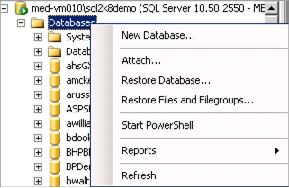
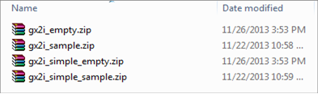

Create a database, for example “Coritygx”, where all the database objects used by Cority will be created and stored using SQL Server Enterprise Manager.
When naming the database, avoid leading or trailing spaces, beginning the name with a number or single quote ('), and the following characters: minus sign (-), space ( ), period (.), double-quotes ("), and either square bracket ([ ]).

There are four database backup files located in the Cority GX2x installation package in the "Database\Sample SQL Server Database\" folder. One is with the sample data populated (gx2x_sample), the other one (gx2x_empty) is an empty database that contains only the necessary data required by the application to run properly.

gx2*_empty.zip contains no data, ideal for setting new production environment
gx2*_sample.zip contains sample data, ideal for setting up testing environment
gx2*_simple_empty.zip contains no data and has simple layouts, ideal for setting new production environment that require simplified layouts
gx2*_simple_sample.zip contains sample data and has simple layouts, ideal for setting up testing environment that require simplified layouts
One of these four files should be restored over the Cority database.
The restore process is outside the scope of this guide. Please refer to the Microsoft SQL Server manual for instructions on how to restore a database backup
It recommended to use the server collation SQL_Latin1_General_CP1_CI_AS. This collation is preferred over Latin1_Genral_CI_AS as it will perform better and will not confuse certain latin letters.
Create a database user, for example “gxuser”. The minimum privileges that this database user should have are “db_datareader” and “db_datawriter”. This ensures that the application can read/write all objects in the database.